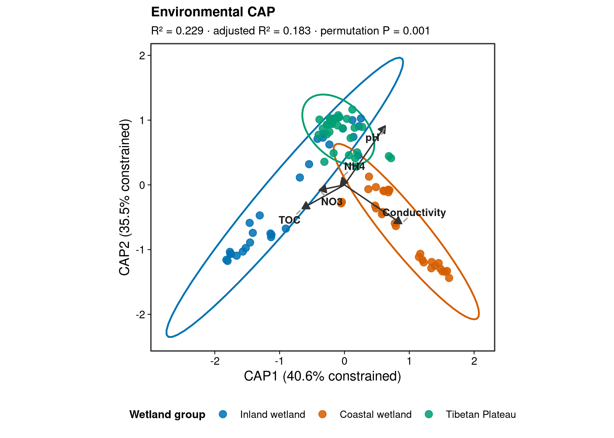

options(timeout = 600)
data_url <- "https://raw.githubusercontent.com/petemeng/microbiome-best-practices/3cb6a817e0c73ab7ecbec1cedc1ad80cbb9ecfaa/"
input_files <- c(
"data/small/environment.tsv",
"data/small/metadata.tsv",
"data/small/otutab.tsv",
"data/small/taxonomy.tsv"
)
for (path in input_files) {
dir.create(dirname(path), recursive = TRUE, showWarnings = FALSE)
if (!file.exists(path)) download.file(paste0(data_url, path), path, mode = "wb", quiet = TRUE)
}约束排序：CAP/db-RDA/RDA/CCA（复现）
约束排序回答环境解释了多少群落差异
环境微生物组论文经常出现一张带箭头的二维排序图：
- 每个点是一个样本；
- 点的颜色表示地点、处理或表型；
pH、Conductivity、TOC等箭头表示环境梯度；- 图注报告约束模型的 (R^2)、调整后 (R^2) 和置换检验 P 值。
这类图回答的不是“样本自然会沿哪两个方向变化”，而是：
预先指定的环境变量能解释多少群落组成差异？这种关联是否强于随机置换下的结果？
本例继续使用中国湿地土壤 16S 数据。原始研究报告 pH 与电导率是影响湿地土壤细菌群落的重要环境因子；microeco公开分发了 OTU、分类、样本和环境因子表。下面从这些表拟合一个五变量 CAP 模型。
重要约束排序不是把差异“逼出来”
CAP 是有监督模型：坐标轴专门呈现可由给定变量解释的变异。因此分离更明显是模型定义的结果，不是独立证据。证据来自预先设定的假设、调整后 (R^2)、置换检验、共线性检查和与研究设计一致的置换方案。
下载并读取本次分析的数据
需要 R，以及 ggplot2、ggrepel、scales、vegan。本次使用中国湿地的 OTU count 表、分类表和样本信息表，以及本次分析使用的实测环境变量或系统发育信息。
在一个新建的文件夹中运行以下代码，下载文件后按文中的顺序继续分析：
library(vegan)
library(ggplot2)
set.seed(20260718)
pal_pub <- c(
"#0072B2", "#D55E00", "#009E73", "#CC79A7",
"#E69F00", "#56B4E9", "#F0E442", "#999999"
)
scale_color_pub <- function(...) {
ggplot2::scale_color_manual(values = pal_pub, ...)
}
scale_fill_pub <- function(...) {
ggplot2::scale_fill_manual(values = pal_pub, ...)
}
theme_pub <- function(base_size = 12) {
ggplot2::theme_bw(base_size = base_size, base_family = "sans") +
ggplot2::theme(
panel.grid = ggplot2::element_blank(),
axis.text = ggplot2::element_text(color = "black"),
axis.ticks = ggplot2::element_line(color = "black", linewidth = 0.3),
legend.key = ggplot2::element_blank(),
legend.background = ggplot2::element_rect(
fill = scales::alpha("white", 0.7),
color = NA
)
)
}
save_pub <- function(
plot,
file_base,
width = 125,
height = 100,
units = "mm",
dpi = 300
) {
dir.create(dirname(file_base), recursive = TRUE, showWarnings = FALSE)
ggplot2::ggsave(
paste0(file_base, ".pdf"),
plot,
width = width,
height = height,
units = units,
device = grDevices::cairo_pdf
)
ggplot2::ggsave(
paste0(file_base, ".png"),
plot,
width = width,
height = height,
units = units,
dpi = dpi,
bg = "white"
)
ggplot2::ggsave(
paste0(file_base, ".tiff"),
plot,
width = width,
height = height,
units = units,
dpi = dpi,
compression = "lzw",
bg = "white"
)
invisible(plot)
}读取四张表并按 ID 对齐
otutab <- read.delim(
"data/small/otutab.tsv",
row.names = 1,
check.names = FALSE
)
taxonomy <- read.delim(
"data/small/taxonomy.tsv",
row.names = 1,
check.names = FALSE
)
metadata <- read.delim(
"data/small/metadata.tsv",
row.names = 1,
check.names = FALSE
)
environment <- read.delim(
"data/small/environment.tsv",
row.names = 1,
check.names = FALSE
)
otutab <- as.matrix(otutab)
storage.mode(otutab) <- "numeric"
stopifnot(
identical(rownames(otutab), rownames(taxonomy)),
identical(colnames(otutab), rownames(metadata)),
all(colnames(otutab) %in% rownames(environment)),
all(otutab >= 0),
all(colSums(otutab) > 0)
)
environment <- environment[colnames(otutab), , drop = FALSE]
dim(otutab)
otutab[1:5, 1:5]
taxonomy[1:5, , drop = FALSE]
head(metadata)
head(environment)[1] 13628 90
S1 S2 S3 S4 S5
OTU_4272 1 0 1 1 0
OTU_236 1 4 0 2 35
OTU_399 9 2 2 4 4
OTU_1556 5 18 7 3 2
OTU_32 83 9 19 8 102
Kingdom Phylum
OTU_4272 k__Bacteria p__Firmicutes
OTU_236 k__Bacteria p__Chloroflexi
OTU_399 k__Bacteria p__Proteobacteria
OTU_1556 k__Bacteria p__Acidobacteria
OTU_32 k__Archaea p__Miscellaneous Crenarchaeotic Group
Class Order Family Genus
OTU_4272 c__Bacilli o__Bacillales f__ g__
OTU_236 c__ o__ f__ g__
OTU_399 c__Betaproteobacteria o__Nitrosomonadales f__Nitrosomonadaceae g__
OTU_1556 c__Acidobacteria o__Subgroup 17 f__ g__
OTU_32 c__ o__ f__ g__
Species
OTU_4272 s__
OTU_236 s__
OTU_399 s__
OTU_1556 s__
OTU_32 s__
Group Type Saline
S1 IW NE Non-saline soil
S2 IW NE Non-saline soil
S3 IW NE Non-saline soil
S4 IW NE Non-saline soil
S5 IW NE Non-saline soil
S6 IW NE Non-saline soil
Latitude Longitude Altitude Temperature Precipitation TOC NH4 NO3
S1 52.96482 122.5635 432 -4.2 445 10.02 18.95966 1.93
S2 52.94877 122.6109 445 -4.3 449 6.94 21.05730 1.46
S3 52.94932 122.6099 430 -4.3 449 8.38 14.31937 2.38
S4 52.94900 122.6104 430 -4.3 449 8.17 20.89645 1.38
S5 52.95292 122.6057 429 -4.3 449 8.41 9.65465 0.77
S6 52.95300 122.6123 429 -4.3 449 8.13 15.94577 1.31
pH Conductivity TN
S1 5.10 108.7 0.28
S2 6.53 31.2 0.22
S3 5.13 68.2 0.26
S4 5.81 64.4 0.25
S5 5.50 33.5 0.24
S6 5.37 33.3 0.26下载完整 R 脚本。脚本包含数据下载、计算和图形导出。
首次使用时安装 R 包
install.packages(c("vegan", "ggplot2", "ggrepel", "scales", "digest"))CAP 到底约束了什么
群落总变异可分为两部分：
[ = + ]
约束部分是当前预测变量能够解释的群落变异，残差部分是模型没有解释的变异。原始 (R^2) 随变量数量增加而单调上升，因此多变量模型应同时报告调整后 (R^2)。
RDA、CCA 与 CAP/db-RDA 的选择
- RDA（redundancy analysis）：本质上是多响应线性回归后做 PCA，适合 Hellinger 或 CLR 等近欧氏表示。
- CCA（canonical correspondence analysis）：基于卡方距离和单峰响应假设，常用于沿长环境梯度的经典群落生态数据。
- db-RDA（distance-based RDA）/ CAP：先用距离表示群落差异，再用预测变量约束排序，可结合 Bray–Curtis 等非欧氏距离。
vegan::capscale() 和 vegan::dbrda() 都可拟合基于距离的约束模型。这里用 capscale(..., distance = "bray", add = "lingoes")，显式处理 Bray–Curtis 可能产生的负特征值。
深入：箭头、样本点和分组颜色分别代表什么
连续变量的箭头方向表示该变量增加的方向，箭头长度反映它与当前二维排序空间的关联强度。两个箭头夹角较小通常表示正相关，方向相反通常表示负相关，接近直角表示当前二维投影中的相关较弱。
这些解释有三项限制：
- 箭头是多维模型在二维平面的投影，短箭头可能只是信息落在更高轴；
- 箭头表示关联，不证明因果；
- 图上用颜色标出的
Group可以只用于展示。若Group没进入公式，它不是该模型的约束变量。
因子变量进入公式后通常显示为水平质心；连续变量显示为 biplot arrows。不要把两者都解释成连续梯度。
注记为什么同时做顺序检验和边际检验
anova(model, by = "terms") 按公式顺序逐项加入变量，结果依赖变量排列；by = "margin" 检验每个变量在控制其余变量后的边际贡献。本例两者都运行：前者复现预先指定的建模顺序，后者用于判断独立贡献。
检验预先指定变量与群落结构的关系
构建用于 Bray–Curtis 的群落矩阵
与非约束排序一致，保留至少在 5% 样本中检出的特征，并转换为样本内相对丰度。
min_prevalence <- 0.05
min_samples <- ceiling(min_prevalence * ncol(otutab))
keep_feature <- rowSums(otutab > 0) >= min_samples
comm <- t(otutab[keep_feature, , drop = FALSE])
comm_rel <- sweep(comm, 1, rowSums(comm), "/")
metadata <- metadata[rownames(comm_rel), , drop = FALSE]
environment <- environment[rownames(comm_rel), , drop = FALSE]
group_labels <- c(
IW = "Inland wetland",
CW = "Coastal wetland",
TW = "Tibetan Plateau"
)
metadata$Group <- factor(
unname(group_labels[metadata$Group]),
levels = unname(group_labels)
)
stopifnot(
all(abs(rowSums(comm_rel) - 1) < 1e-10),
identical(rownames(comm_rel), rownames(metadata)),
identical(rownames(comm_rel), rownames(environment)),
!anyNA(metadata$Group)
)
c(
samples = nrow(comm_rel),
retained_features = ncol(comm_rel),
original_features = nrow(otutab)
)
table(metadata$Group) samples retained_features original_features
90 11113 13628
Inland wetland Coastal wetland Tibetan Plateau
30 30 30 先看一个单因子 CAP 模型
这个模型把湿地地理组作为约束变量。图上分开是预期结果，模型显著性仍由置换检验决定。
cap_group <- vegan::capscale(
comm_rel ~ Group,
data = metadata,
distance = "bray",
add = "lingoes"
)
set.seed(20260718)
cap_group_test <- anova(
cap_group,
permutations = 999
)
cap_group_r2 <- vegan::RsquareAdj(cap_group)
cap_group_test
cap_group_r2Permutation test for capscale under reduced model
Permutation: free
Number of permutations: 999
Model: vegan::capscale(formula = comm_rel ~ Group, data = metadata, distance = "bray", add = "lingoes")
Df SumOfSqs F Pr(>F)
Model 2 6.3195 11.935 0.001 ***
Residual 87 23.0329
---
Signif. codes: 0 '***' 0.001 '**' 0.01 '*' 0.05 '.' 0.1 ' ' 1
$r.squared
[1] 0.2152982
$adj.r.squared
[1] 0.1972591预先确定环境变量并处理缺失值
本例选择 pH、TOC、NH4、NO3 和 Conductivity。其中 pH 与电导率来自原研究的主要环境结论，其余三项代表碳、铵态氮和硝态氮。变量在建模前做 Z-score 标准化，使量纲可比。
predictors <- c(
"pH",
"TOC",
"NH4",
"NO3",
"Conductivity"
)
stopifnot(all(predictors %in% colnames(environment)))
complete_samples <- complete.cases(environment[, predictors, drop = FALSE])
comm_env <- comm_rel[complete_samples, , drop = FALSE]
metadata_env <- metadata[complete_samples, , drop = FALSE]
environment_env <- environment[
complete_samples,
predictors,
drop = FALSE
]
model_data <- as.data.frame(scale(environment_env))
stopifnot(
identical(rownames(comm_env), rownames(model_data)),
all(vapply(model_data, is.numeric, logical(1)))
)
summary(model_data) pH TOC NH4 NO3
Min. :-2.1025 Min. :-0.5705 Min. :-1.0391 Min. :-0.7371
1st Qu.:-0.4813 1st Qu.:-0.4643 1st Qu.:-0.6486 1st Qu.:-0.7371
Median : 0.1735 Median :-0.3179 Median :-0.2648 Median :-0.3944
Mean : 0.0000 Mean : 0.0000 Mean : 0.0000 Mean : 0.0000
3rd Qu.: 0.6869 3rd Qu.: 0.0447 3rd Qu.: 0.2454 3rd Qu.: 0.1988
Max. : 2.1400 Max. : 4.6740 Max. : 5.7514 Max. : 4.6714
Conductivity
Min. :-0.5997
1st Qu.:-0.5547
Median :-0.4712
Mean : 0.0000
3rd Qu.: 0.3694
Max. : 5.8675 拟合环境 CAP，并检查 (R^2) 与共线性
cap_env <- vegan::capscale(
comm_env ~ pH + TOC + NH4 + NO3 + Conductivity,
data = model_data,
distance = "bray",
add = "lingoes"
)
cap_env_r2 <- vegan::RsquareAdj(cap_env)
cap_env_vif <- vegan::vif.cca(cap_env)
cap_env_r2
cap_env_vif$r.squared
[1] 0.2286814
$adj.r.squared
[1] 0.1827695
pH TOC NH4 NO3 Conductivity
1.456621 1.626594 1.053479 1.246362 1.043803 本例所有 VIF 均低于 2，没有明显多重共线性。VIF 很高时，应依据科学问题删除或合并变量，不能为了获得更漂亮的箭头保留冗余预测因子。
整体、逐项、边际和逐轴置换检验
每次随机置换前都固定种子。by = "terms" 是顺序检验，by = "margin" 是控制其他变量后的边际检验。
set.seed(20260718)
cap_env_overall <- anova(
cap_env,
permutations = 999
)
set.seed(20260718)
cap_env_terms <- anova(
cap_env,
by = "terms",
permutations = 999
)
set.seed(20260718)
cap_env_margin <- anova(
cap_env,
by = "margin",
permutations = 999
)
set.seed(20260718)
cap_env_axes <- anova(
cap_env,
by = "axis",
permutations = 999
)
cap_env_overall
cap_env_terms
cap_env_margin
cap_env_axes
cap_env_p <- unname(cap_env_overall$`Pr(>F)`[1])
cap_env_r2_raw <- unname(cap_env_r2$r.squared)
cap_env_r2_adjusted <- unname(cap_env_r2$adj.r.squared)Permutation test for capscale under reduced model
Permutation: free
Number of permutations: 999
Model: vegan::capscale(formula = comm_env ~ pH + TOC + NH4 + NO3 + Conductivity, data = model_data, distance = "bray", add = "lingoes")
Df SumOfSqs F Pr(>F)
Model 5 6.7123 4.9809 0.001 ***
Residual 84 22.6401
---
Signif. codes: 0 '***' 0.001 '**' 0.01 '*' 0.05 '.' 0.1 ' ' 1
Permutation test for capscale under reduced model
Terms added sequentially (first to last)
Permutation: free
Number of permutations: 999
Model: vegan::capscale(formula = comm_env ~ pH + TOC + NH4 + NO3 + Conductivity, data = model_data, distance = "bray", add = "lingoes")
Df SumOfSqs F Pr(>F)
pH 1 2.4049 8.9226 0.001 ***
TOC 1 0.9247 3.4308 0.001 ***
NH4 1 0.6554 2.4316 0.002 **
NO3 1 0.4231 1.5699 0.036 *
Conductivity 1 2.3043 8.5495 0.001 ***
Residual 84 22.6401
---
Signif. codes: 0 '***' 0.001 '**' 0.01 '*' 0.05 '.' 0.1 ' ' 1
Permutation test for capscale under reduced model
Marginal effects of terms
Permutation: free
Number of permutations: 999
Model: vegan::capscale(formula = comm_env ~ pH + TOC + NH4 + NO3 + Conductivity, data = model_data, distance = "bray", add = "lingoes")
Df SumOfSqs F Pr(>F)
pH 1 1.8475 6.8547 0.001 ***
TOC 1 0.7888 2.9267 0.001 ***
NH4 1 0.6795 2.5210 0.002 **
NO3 1 0.3684 1.3667 0.093 .
Conductivity 1 2.3043 8.5495 0.001 ***
Residual 84 22.6401
---
Signif. codes: 0 '***' 0.001 '**' 0.01 '*' 0.05 '.' 0.1 ' ' 1
Permutation test for capscale under reduced model
Forward tests for axes
Permutation: free
Number of permutations: 999
Model: vegan::capscale(formula = comm_env ~ pH + TOC + NH4 + NO3 + Conductivity, data = model_data, distance = "bray", add = "lingoes")
Df SumOfSqs F Pr(>F)
CAP1 1 2.7263 10.1151 0.001 ***
CAP2 1 2.3811 8.8344 0.001 ***
CAP3 1 0.6804 2.5243 0.003 **
CAP4 1 0.5877 2.1804 0.007 **
CAP5 1 0.3370 1.2503 0.125
Residual 84 22.6401
---
Signif. codes: 0 '***' 0.001 '**' 0.01 '*' 0.05 '.' 0.1 ' ' 1注意 NO3 在顺序检验与边际检验中的结论可能不同：前者会把先进入模型的变量解释后的剩余变异依次分配，后者检验控制全部其他变量后的贡献。这正是不能只贴一张箭头图的原因。
提取当前环境模型的坐标和轴标签
轴百分比按“受约束变异内部的占比”计算，并在标签中明确写出 constrained。调整后 (R^2) 则衡量全部五个变量对总群落变异的解释比例。
env_eigenvalues_mod2 <- cap_env$CCA$eig
env_axis_percent_mod2 <- 100 *
env_eigenvalues_mod2[1:2] /
sum(env_eigenvalues_mod2)
lab1_mod2 <- sprintf(
"CAP1 (%.1f%% constrained)",
env_axis_percent_mod2[1]
)
lab2_mod2 <- sprintf(
"CAP2 (%.1f%% constrained)",
env_axis_percent_mod2[2]
)
site_scores_mod2 <- as.data.frame(
vegan::scores(
cap_env,
display = "sites",
choices = 1:2,
scaling = 2
)
)
site_scores_mod2$SampleID <- rownames(site_scores_mod2)
site_scores_mod2$Group <- metadata_env[
site_scores_mod2$SampleID,
"Group"
]
arrow_scores_mod2 <- as.data.frame(
vegan::scores(
cap_env,
display = "bp",
choices = 1:2,
scaling = 2
)
)
arrow_scores_mod2$Variable <- rownames(arrow_scores_mod2)
arrow_multiplier_mod2 <- min(
diff(range(site_scores_mod2$CAP1)) * 0.35 /
max(abs(arrow_scores_mod2$CAP1)),
diff(range(site_scores_mod2$CAP2)) * 0.35 /
max(abs(arrow_scores_mod2$CAP2))
)
arrow_scores_mod2$CAP1 <- arrow_scores_mod2$CAP1 *
arrow_multiplier_mod2
arrow_scores_mod2$CAP2 <- arrow_scores_mod2$CAP2 *
arrow_multiplier_mod2
head(site_scores_mod2)
arrow_scores_mod2 CAP1 CAP2 SampleID Group
S1 -1.306507 -0.4718530 S1 Inland wetland
S2 -1.413450 -0.7413386 S2 Inland wetland
S3 -1.455895 -0.8905344 S3 Inland wetland
S4 -1.567960 -1.0303186 S4 Inland wetland
S5 -1.523055 -0.9751641 S5 Inland wetland
S6 -1.662818 -1.0937208 S6 Inland wetland
CAP1 CAP2 Variable
pH 0.62908411 0.91049570 pH
TOC -0.65228224 -0.36588590 TOC
NH4 -0.03593229 0.11372774 NH4
NO3 -0.38804971 -0.08116419 NO3
Conductivity 0.88250723 -0.59897850 Conductivity每个模型都必须重新提取 eigenvalues 和 labels。不能把单因子模型的 CAP1 百分比复制到环境模型。
正确解释约束轴和环境箭头
箭头缩放只改变绘图长度，不进入模型计算。环境变量是约束项，地理组仅用于给样本点着色。
format_p <- function(p) {
if (is.na(p)) {
return("= NA")
}
if (p < 0.001) {
return("< 0.001")
}
sprintf("= %.3f", p)
}
p_cap_environment <- ggplot(
site_scores_mod2,
aes(CAP1, CAP2, color = Group)
) +
stat_ellipse(
type = "t",
level = 0.95,
linewidth = 0.7,
show.legend = FALSE
) +
geom_point(size = 2.5, alpha = 0.86) +
geom_segment(
data = arrow_scores_mod2,
aes(x = 0, y = 0, xend = CAP1, yend = CAP2),
inherit.aes = FALSE,
color = "grey20",
linewidth = 0.55,
arrow = grid::arrow(
length = grid::unit(2.2, "mm"),
type = "closed"
)
) +
ggrepel::geom_text_repel(
data = arrow_scores_mod2,
aes(x = CAP1, y = CAP2, label = Variable),
inherit.aes = FALSE,
color = "grey10",
size = 3.0,
fontface = "bold",
seed = 20260718,
box.padding = 0.35,
point.padding = 0.2,
min.segment.length = 0,
segment.color = "grey60"
) +
scale_color_pub(name = "Wetland group") +
labs(
title = "Environmental CAP",
subtitle = paste0(
"R² = ", sprintf("%.3f", cap_env_r2_raw),
" · adjusted R² = ", sprintf("%.3f", cap_env_r2_adjusted),
" · permutation P ", format_p(cap_env_p)
),
x = lab1_mod2,
y = lab2_mod2
) +
coord_equal(clip = "off") +
theme_pub(base_size = 11) +
theme(
plot.title = element_text(face = "bold", size = 11),
plot.subtitle = element_text(size = 9.2),
legend.position = "bottom",
legend.title = element_text(face = "bold", size = 9),
legend.text = element_text(size = 8.3)
) +
guides(color = guide_legend(nrow = 1, byrow = TRUE))
p_cap_environment
save_pub(
p_cap_environment,
"figures/24-cap-environment",
width = 150,
height = 110
)导出后得到：
figures/24-cap-environment.pdf：矢量主图；figures/24-cap-environment.png：300 dpi 网页与公众号图；figures/24-cap-environment.tiff：300 dpi、LZW 压缩期刊图。
常见坑
注意约束排序最常见的七个误区
- 看到 CAP 分开就宣称存在差异。 轴本来就是按预测变量优化的；必须报告置换检验和调整后 (R^2)。
- 变量越多越好。 原始 (R^2) 会随变量增加而上升。变量应由研究假设预先确定，并检查 VIF 和调整后 (R^2)。
- 把
by = "terms"当成独立效应。 它依赖公式顺序；独立贡献应结合by = "margin"，大量探索性检验还需控制多重比较。 - 不标准化不同量纲的环境变量。 pH、mg/kg 与 µS/cm 的数值尺度不同；连续预测变量应先 Z-score，除非模型有明确的原尺度解释需求。
- 忽略区组和重复测量。
Condition(Batch)用于从模型中控制协变量，受限置换用于保证样本交换性；两者解决不同问题，不能互相替代。 - 把箭头解释为因果。 箭头只表示当前模型与二维投影中的关联方向和强度。
- 复用别的模型轴标签。 每次重拟合后都要从当前模型重新提取 eigenvalues、scores、(R^2) 和 P 值。
警告环境变量和地理分组可能混杂
本数据来自不同地理湿地，环境梯度与地理组可能相关。主模型描述的是环境因子与群落结构的总体关联，不证明环境因子的独立因果效应。若目标是估计“控制地理组后的环境关联”，可拟合 ... + Condition(Group) 的 partial CAP，并使用与采样层级一致的置换设计。
报告约束排序与置换检验的方法与限制
可直接替换变量名、阈值和置换限制：
Distance-based redundancy analysis (db-RDA; CAP) was performed using Bray–Curtis dissimilarities calculated from sample-wise relative abundances. Features detected in at least 5% of samples were retained, yielding 11,113 features across 90 complete samples. The prespecified environmental predictors (pH, TOC, NH4, NO3, Conductivity) were Z-score standardized before model fitting. A Lingoes correction was applied to the Bray–Curtis dissimilarities. Model significance was assessed with 999 permutations (P = 0.001), and the model explained (R^2) = 0.229 of the total variation (adjusted (R^2) = 0.183). Sequential, marginal, and axis-wise permutation tests were performed, and variance inflation factors were all below 1.63. Wetland group was used only for point color in the environmental CAP figure.
若样本属于同一受试者、站点或区组，应把最后的置换描述改成实际限制，例如“permutations were restricted within site”。
将约束排序与置换检验用于自己的研究
四张表的最低要求
otutab：特征 × 样本的非负计数表；taxonomy：特征 × 分类层级，行名与otutab完全相同；metadata：样本 × 分组/协变量，行名与otutab列名一致；environment：样本 × 连续环境或临床变量，行名能与样本 ID 对齐。
替换路径和公式：
otutab <- read.delim(
"your_project/otutab.tsv",
row.names = 1,
check.names = FALSE
)
taxonomy <- read.delim(
"your_project/taxonomy.tsv",
row.names = 1,
check.names = FALSE
)
metadata <- read.delim(
"your_project/metadata.tsv",
row.names = 1,
check.names = FALSE
)
environment <- read.delim(
"your_project/environment.tsv",
row.names = 1,
check.names = FALSE
)
predictors <- c("pH", "Moisture", "OrganicCarbon")
group_col <- "Treatment"
stopifnot(
identical(rownames(otutab), rownames(taxonomy)),
identical(colnames(otutab), rownames(metadata)),
all(colnames(otutab) %in% rownames(environment)),
all(predictors %in% colnames(environment))
)然后把主模型公式替换为：
cap_your_data <- vegan::capscale(
comm_rel ~ pH + Moisture + OrganicCarbon,
data = model_data,
distance = "bray",
add = "lingoes"
)正式建模前还要决定：
- 环境变量是否由先验假设确定，而不是根据同一张图反复筛选；
- 缺失样本如何处理，最终模型样本数是多少；
- 是否存在批次、地点、家庭、受试者或时间序列结构；
- 需要把哪些变量放入
Condition()，置换应限制在哪个层级； - Bray–Curtis、Aitchison 或 UniFrac 哪个距离与科学问题一致；
- 模型结果在不同 prevalence 阈值和变量集合下是否稳定。
参考
- An J, Liu C, Wang Q, et al. Soil bacterial community structure in Chinese wetlands. Geoderma. 2019;337:290–299. doi:10.1016/j.geoderma.2018.09.035
- Liu C, Cui Y, Li X, Yao M. microeco: an R package for data mining in microbial community ecology. FEMS Microbiology Ecology. 2021;97(2):fiaa255. doi:10.1093/femsec/fiaa255
- Anderson MJ, Willis TJ. Canonical analysis of principal coordinates: a useful method of constrained ordination for ecology. Ecology. 2003;84:511–525. doi:10.1890/0012-9658(2003)084[0511:CAOPCA]2.0.CO;2
- Legendre P, Anderson MJ. Distance-based redundancy analysis: testing multispecies responses in multifactorial ecological experiments. Ecological Monographs. 1999;69:1–24.
- Peres-Neto PR, Legendre P, Dray S, Borcard D. Variation partitioning of species data matrices: estimation and comparison of fractions. Ecology. 2006;87:2614–2625.
- Oksanen J, Simpson GL, Blanchet FG, et al.
vegan: Community Ecology Package. CRAN package page